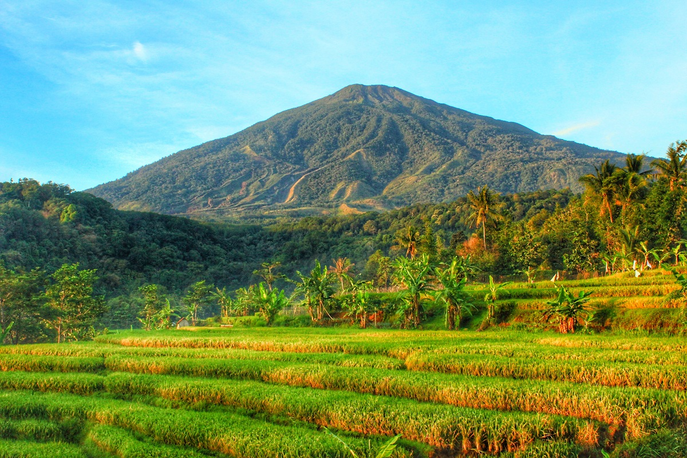
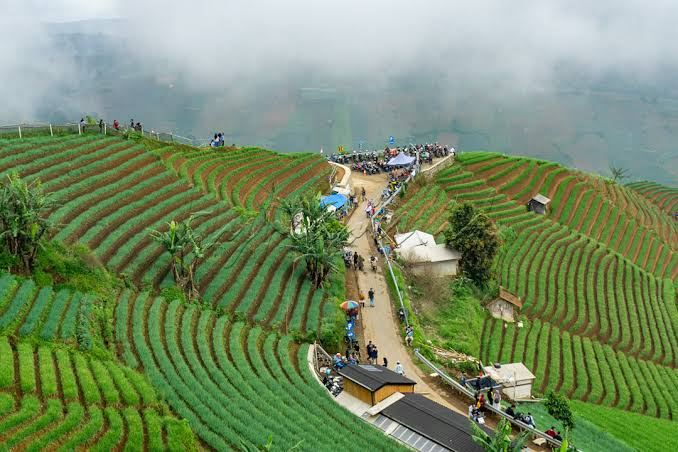
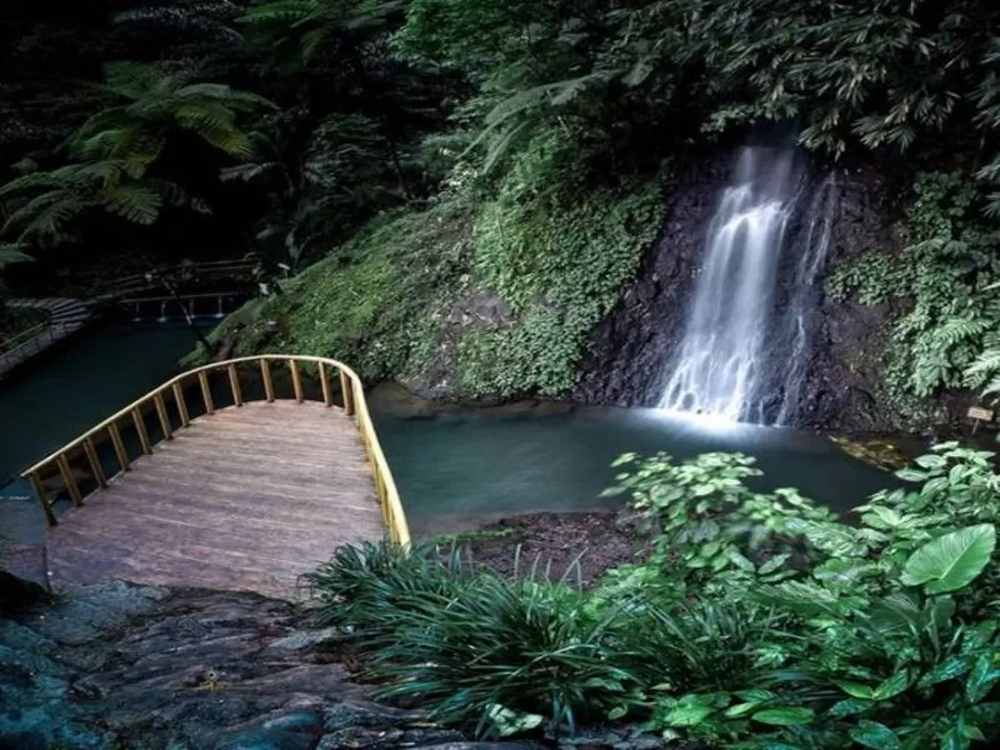
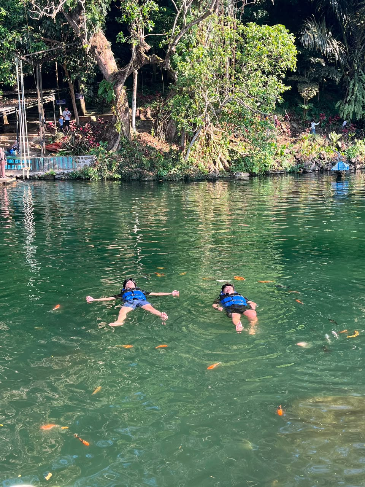
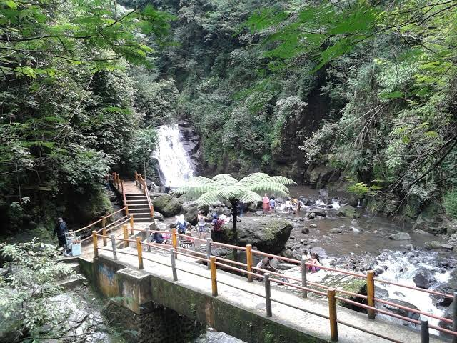
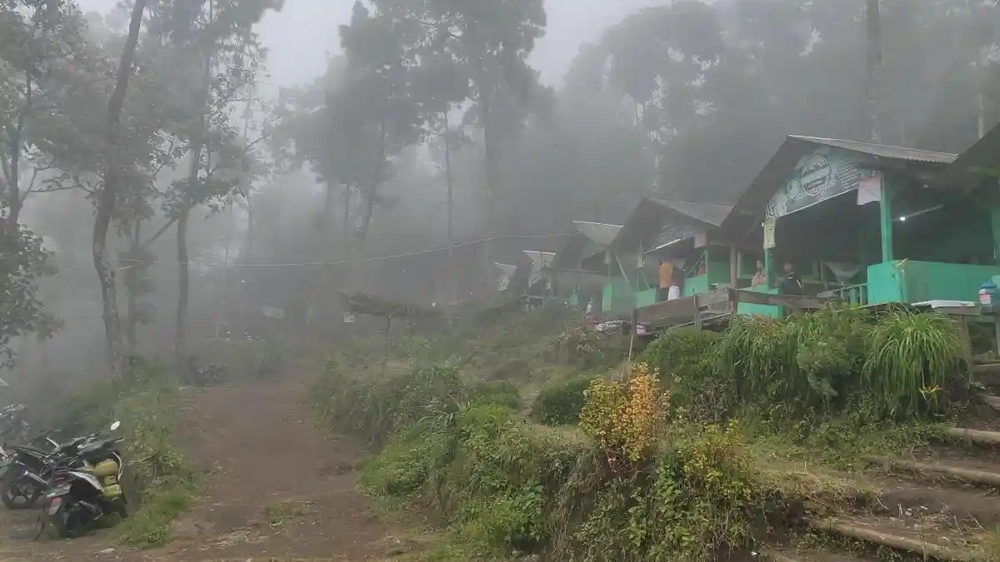

Pemandangan hijau
Hamparan sawah, bukit, dan pepohonan menjadi daya tarik utama.

Tentang Majalengka
Majalengka menawarkan pemandangan perbukitan, air terjun, dan kawasan hutan yang mudah dijangkau dari berbagai kota di Jawa Barat. Halaman ini merangkum beberapa destinasi unggulan agar calon pengunjung cepat mendapat gambaran.
Hamparan sawah, bukit, dan pepohonan menjadi daya tarik utama.
Ada pilihan wisata alam, air, dan jalur gunung.

Destinasi
Kecamatan Argapura
Sawah terasering di lereng perbukitan yang terkenal dengan suasana pagi, kabut tipis, dan latar Gunung Ciremai.

Kecamatan Sindangwangi
Air terjun di kawasan hutan dengan udara sejuk, aliran air jernih, dan jalur kunjungan yang cocok untuk keluarga.

Kecamatan Sindang
Danau alami yang dikelilingi pepohonan, cocok untuk berjalan santai dan menikmati suasana tenang.

Kecamatan Argapura
Air terjun bertingkat dengan lanskap hijau yang populer untuk menikmati suasana segar di kaki gunung.

Kecamatan Argapura
Jalur pendakian menuju Gunung Ciremai melalui kawasan Apuy yang dikenal dengan pemandangan lereng dan udara dingin.

Tips Berkunjung
Hindari perjalanan ke curug atau jalur gunung saat hujan deras.
Pagi hari biasanya lebih sejuk, sepi, dan cocok untuk foto.
Gunakan alas kaki nyaman, air minum, dan pakaian cadangan.
Bawa kembali sampah dan ikuti aturan di lokasi wisata.